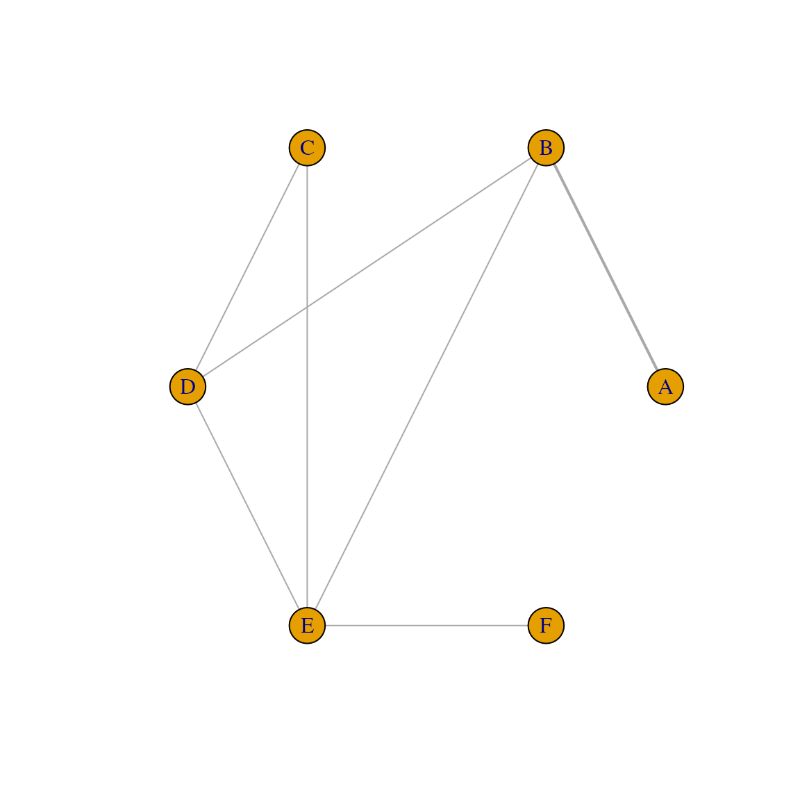
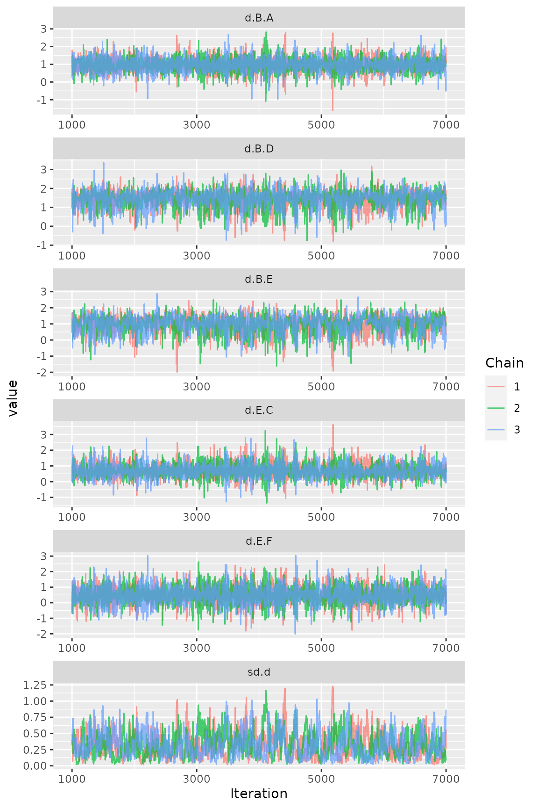
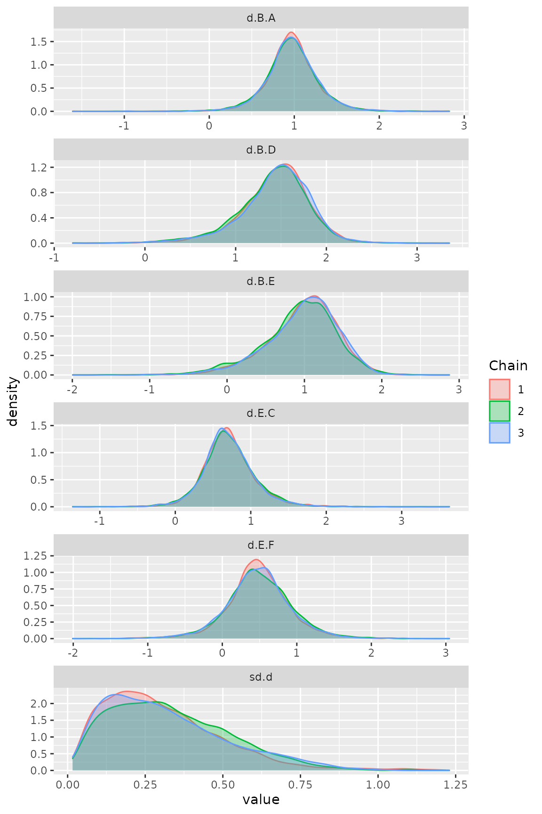
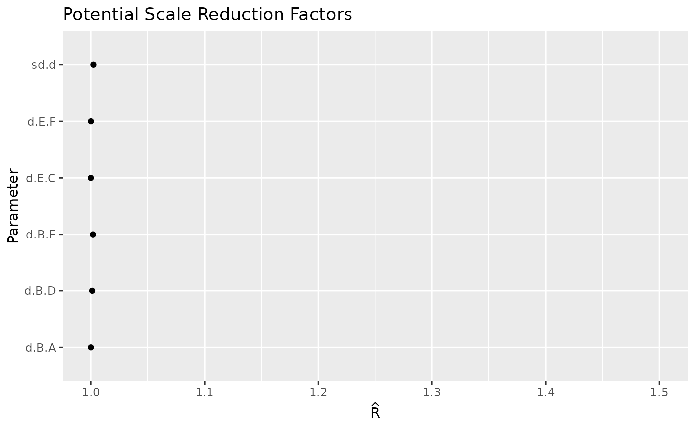
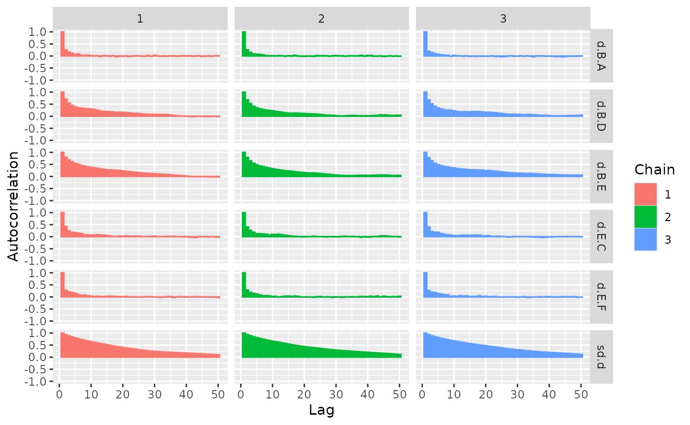
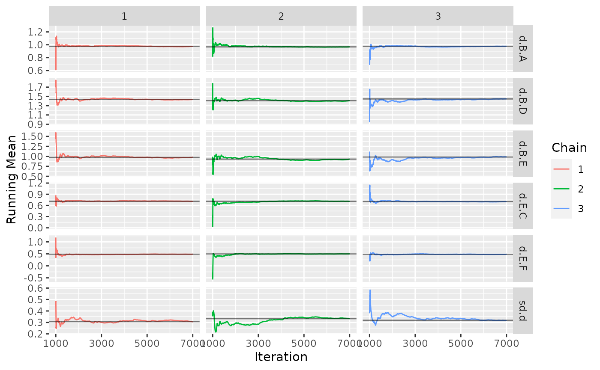
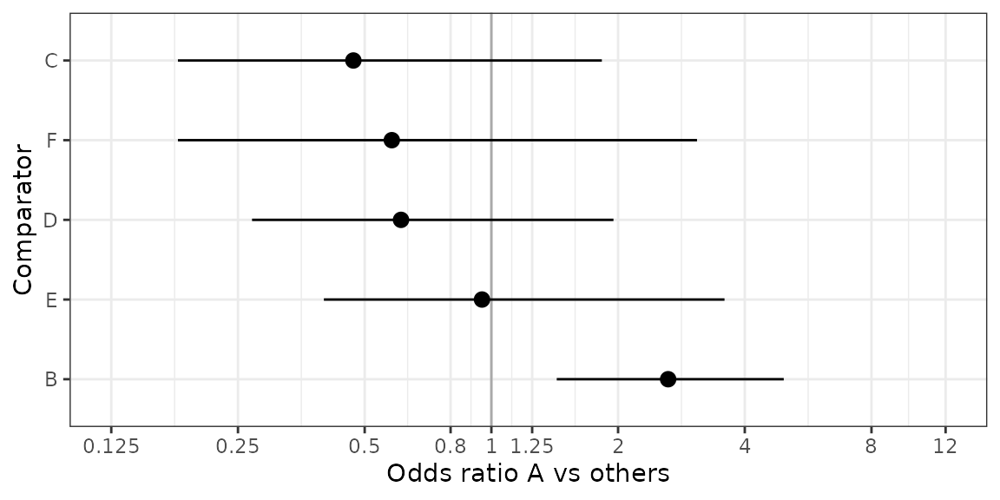
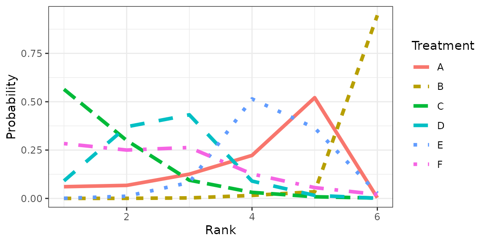
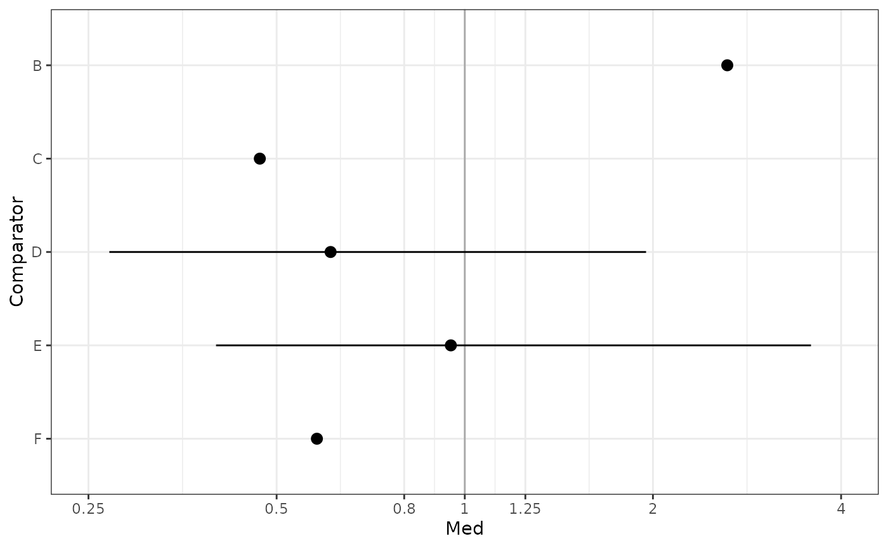

example-nma-binary-data.RmdThis vignette provides a short example of a Bayesian NMA for Binary data. The model fit relies on the gemtc package, pre- and post-processing is done with gemtcPlus.
data("binary_data", package = "gemtcPlus") # This should be binary
model_plan <- plan_binary(bth.model = "RE",
n.chain = 3,
n.iter = 6000,
thin = 1,
n.adapt = 1000,
link = "logit",
bth.prior = mtc.hy.prior(type = "var",
distr = "dlnorm",-4.18, 1 / 1.41 ^ 2)
)
model_input <- nma_pre_proc(binary_data, plan = model_plan)Figure Network plot
plot(model_input$fitting_data)
model <- nma_fit(model_input = model_input)## Compiling model graph
## Resolving undeclared variables
## Allocating nodes
## Graph information:
## Observed stochastic nodes: 16
## Unobserved stochastic nodes: 22
## Total graph size: 609
##
## Initializing modelThe ggmcmc package provides ggplot2 versions of all major convergence plots and diagnostics.
Figure Traceplot
ggs_traceplot(ggs(model$samples))
Figure Densityplot
ggs_density(ggs(model$samples))
Many more diagnostic plots are available, such as Brooks-Gelman-Rubin convergence diagnostic (Rhat), auto-correlation plot, or running means.

ggs_autocorrelation(ggs(model$samples))
ggs_running(ggs(model$samples))
The contrasts in this model are log-odds ratios.
Unfortunately, gemtc does not provide an estimate of the effective sample size (n.eff). Instead, a time-series SE is given. As a rule of thumb, the length of the MCMC is sufficient if the time-series SE is smaller than 2%(-5%) of the posterior SD.
summary(model)##
## Results on the Log Odds Ratio scale
##
## Iterations = 1001:7000
## Thinning interval = 1
## Number of chains = 3
## Sample size per chain = 6000
##
## 1. Empirical mean and standard deviation for each variable,
## plus standard error of the mean:
##
## Mean SD Naive SE Time-series SE
## d.B.A 0.9728 0.3053 0.002275 0.003609
## d.B.D 1.4288 0.3884 0.002895 0.011183
## d.B.E 0.9635 0.4675 0.003484 0.016226
## d.E.C 0.7093 0.3458 0.002577 0.005722
## d.E.F 0.4892 0.4365 0.003254 0.006332
## sd.d 0.3194 0.1926 0.001435 0.009632
##
## 2. Quantiles for each variable:
##
## 2.5% 25% 50% 75% 97.5%
## d.B.A 0.35907 0.8039 0.9688 1.1423 1.5997
## d.B.D 0.51693 1.2225 1.4701 1.6771 2.0905
## d.B.E -0.10862 0.7077 1.0164 1.2747 1.7478
## d.E.C 0.06965 0.5040 0.6873 0.8944 1.4561
## d.E.F -0.42263 0.2426 0.4827 0.7391 1.3858
## sd.d 0.05443 0.1695 0.2859 0.4333 0.7655
##
## -- Model fit (residual deviance):
##
## Dbar pD DIC
## 21.51829 15.70565 37.22395
##
## 16 data points, ratio 1.345, I^2 = 30%To judge overall model fit, the residual deviance should be compared to the number of independent data points (which can be done via a small utility function in gemtcPlus).
get_mtc_sum(model)## DIC pD resDev dataPoints
## 1 37.22 15.71 21.52 16Assume new treatment is “A” and is to be compared vs all other treatments.
Table Odds ratios treatment A vs other treatments
OR <- get_mtc_newVsAll(model, new.lab = "A", transform = "exp", digits = 2)
OR## Comparator Med CIlo CIup
## 1 B 2.63 1.43 4.95
## 2 C 0.47 0.18 1.83
## 3 D 0.61 0.27 1.95
## 4 E 0.95 0.40 3.58
## 5 F 0.58 0.18 3.08Table Probability A better than other treatments (better meaning larger OR)
get_mtc_probBetter(model, new.lab = "A", smaller.is.better = FALSE, sort.by = "effect")## New Comparator probNewBetter
## 1 A B 0.996
## 4 A E 0.456
## 5 A F 0.208
## 3 A D 0.153
## 2 A C 0.102Figure Forest plot A vs other treatments
plot_mtc_forest(x = OR,
lab = "Odds ratio A vs others",
breaks = c(0.125, 0.25, 0.5, 0.8, 1, 1.25, 2, 4, 8, 12),
sort.by = "effect") 
Table Cross-tabulation of ORs
ctab <- round(exp(relative.effect.table(model)), 2)
pander::pandoc.table(as.data.frame(ctab), split.tables = Inf)| A | B | C | D | E | F | |
|---|---|---|---|---|---|---|
| A | A | 0.38 (0.2, 0.7) | 2.12 (0.55, 5.48) | 1.65 (0.51, 3.76) | 1.06 (0.28, 2.53) | 1.73 (0.32, 5.44) |
| B | 2.63 (1.43, 4.95) | B | 5.61 (1.75, 12.08) | 4.35 (1.68, 8.09) | 2.76 (0.9, 5.74) | 4.54 (0.98, 13.02) |
| C | 0.47 (0.18, 1.83) | 0.18 (0.08, 0.57) | C | 0.78 (0.41, 1.56) | 0.5 (0.23, 0.93) | 0.81 (0.24, 2.39) |
| D | 0.61 (0.27, 1.95) | 0.23 (0.12, 0.6) | 1.28 (0.64, 2.45) | D | 0.64 (0.31, 1.14) | 1.04 (0.31, 2.92) |
| E | 0.95 (0.4, 3.58) | 0.36 (0.17, 1.11) | 1.99 (1.07, 4.29) | 1.56 (0.88, 3.27) | E | 1.62 (0.66, 4) |
| F | 0.58 (0.18, 3.08) | 0.22 (0.08, 1.03) | 1.23 (0.42, 4.17) | 0.96 (0.34, 3.19) | 0.62 (0.25, 1.53) | F |
rk <- rank.probability(model, preferredDirection = 1)
mrk <- reshape2::melt(rk[,], varnames = c("Treatment", "Rank"), value.name = "Probability")
fig <- ggplot(data = mrk) +
geom_line(aes(Rank, Probability, color = Treatment, linetype = Treatment), size = 1.5) +
theme_bw()Figure Rankogram
plot(fig)
Table Rank probabilities
## Rank probability; preferred direction = 1
## Rank 1 Rank 2 Rank 3 Rank 4 Rank 5 Rank 6
## A 0.0605555556 0.06738889 0.125444444 0.22238889 0.520888889 0.0033333333
## B 0.0001666667 0.00050000 0.002444444 0.01555556 0.034500000 0.9468333333
## C 0.5642222222 0.29994444 0.094222222 0.03127778 0.008611111 0.0017222222
## D 0.0907777778 0.37066667 0.432333333 0.08966667 0.015611111 0.0009444444
## E 0.0006666667 0.01138889 0.082333333 0.51461111 0.364444444 0.0265555556
## F 0.2836111111 0.25011111 0.263222222 0.12650000 0.055944444 0.0206111111
nsplit <- mtc.nodesplit(model$model$network)## Compiling model graph
## Resolving undeclared variables
## Allocating nodes
## Graph information:
## Observed stochastic nodes: 16
## Unobserved stochastic nodes: 23
## Total graph size: 1291
##
## Initializing model
##
## Compiling model graph
## Resolving undeclared variables
## Allocating nodes
## Graph information:
## Observed stochastic nodes: 16
## Unobserved stochastic nodes: 23
## Total graph size: 1292
##
## Initializing model
##
## Compiling model graph
## Resolving undeclared variables
## Allocating nodes
## Graph information:
## Observed stochastic nodes: 16
## Unobserved stochastic nodes: 23
## Total graph size: 1291
##
## Initializing model
##
## Compiling model graph
## Resolving undeclared variables
## Allocating nodes
## Graph information:
## Observed stochastic nodes: 16
## Unobserved stochastic nodes: 23
## Total graph size: 1291
##
## Initializing model
##
## Compiling model graph
## Resolving undeclared variables
## Allocating nodes
## Graph information:
## Observed stochastic nodes: 16
## Unobserved stochastic nodes: 23
## Total graph size: 1291
##
## Initializing model
##
## Compiling model graph
## Resolving undeclared variables
## Allocating nodes
## Graph information:
## Observed stochastic nodes: 16
## Unobserved stochastic nodes: 22
## Total graph size: 607
##
## Initializing model
summary(nsplit)## Node-splitting analysis of inconsistency
## ========================================
##
## comparison p.value CrI
## 1 d.B.D 0.075900
## 2 -> direct 1.9 (0.31, 3.4)
## 3 -> indirect -0.45 (-2.8, 1.8)
## 4 -> network 1.2 (-0.67, 2.8)
## 5 d.B.E 0.073425
## 6 -> direct -0.61 (-2.5, 1.3)
## 7 -> indirect 1.7 (-0.28, 3.8)
## 8 -> network 0.57 (-1.4, 2.2)
## 9 d.C.D 0.961075
## 10 -> direct -0.21 (-2.7, 2.2)
## 11 -> indirect -0.13 (-3.3, 3.2)
## 12 -> network -0.19 (-1.9, 1.6)
## 13 d.C.E 0.956625
## 14 -> direct -0.77 (-3.2, 1.7)
## 15 -> indirect -0.85 (-4.1, 2.3)
## 16 -> network -0.78 (-2.5, 0.87)
## 17 d.D.E 0.230250
## 18 -> direct 0.11 (-2.0, 2.2)
## 19 -> indirect -1.3 (-3.6, 0.70)
## 20 -> network -0.59 (-2.2, 0.88)
HR_i <- get_mtc_newVsAll(model, new.lab = "A", transform = "exp", digits = 2)
plot_mtc_forest(HR_i)## Warning: Removed 3 rows containing missing values (geom_segment).
cat(model$code)## R version 4.0.3 (2020-10-10)
## Platform: x86_64-pc-linux-gnu (64-bit)
## Running under: Red Hat Enterprise Linux
##
## Matrix products: default
## BLAS/LAPACK: /usr/lib64/libopenblas-r0.2.20.so
##
## locale:
## [1] LC_CTYPE=en_US.UTF-8 LC_NUMERIC=C
## [3] LC_TIME=en_US.UTF-8 LC_COLLATE=en_US.UTF-8
## [5] LC_MONETARY=en_US.UTF-8 LC_MESSAGES=en_US.UTF-8
## [7] LC_PAPER=en_US.UTF-8 LC_NAME=C
## [9] LC_ADDRESS=C LC_TELEPHONE=C
## [11] LC_MEASUREMENT=en_US.UTF-8 LC_IDENTIFICATION=C
##
## attached base packages:
## [1] stats graphics grDevices utils datasets methods base
##
## other attached packages:
## [1] ggmcmc_1.5.1.1 ggplot2_3.3.6 tidyr_1.2.0 gemtcPlus_1.0.0
## [5] R2jags_0.7-1 rjags_4-13 gemtc_1.0-1 coda_0.19-4
## [9] dplyr_1.0.9
##
## loaded via a namespace (and not attached):
## [1] nlme_3.1-149 fs_1.5.0 RColorBrewer_1.1-2
## [4] rprojroot_1.3-2 tools_4.0.3 backports_1.1.10
## [7] bslib_0.3.1 utf8_1.2.2 R6_2.5.1
## [10] R2WinBUGS_2.1-21 metafor_3.4-0 DBI_1.1.0
## [13] colorspace_2.0-3 withr_2.5.0 tidyselect_1.1.2
## [16] GGally_2.1.2 compiler_4.0.3 textshaping_0.1.2
## [19] cli_3.3.0 xml2_1.3.2 network_1.17.2
## [22] desc_1.4.1 labeling_0.4.2 slam_0.1-50
## [25] sass_0.4.2 scales_1.1.1 pkgdown_2.0.6
## [28] systemfonts_0.3.2 stringr_1.4.0 digest_0.6.29
## [31] minqa_1.2.4 rmarkdown_2.14 pkgconfig_2.0.3
## [34] htmltools_0.5.3 lme4_1.1-30 fastmap_1.1.0
## [37] highr_0.9 rlang_1.0.4 rstudioapi_0.11
## [40] meta_5.5-0 jquerylib_0.1.4 generics_0.1.3
## [43] farver_2.1.1 jsonlite_1.8.0 statnet.common_4.6.0
## [46] magrittr_2.0.3 metadat_1.2-0 Matrix_1.2-18
## [49] Rcpp_1.0.9 munsell_0.5.0 fansi_1.0.3
## [52] abind_1.4-5 lifecycle_1.0.1 stringi_1.7.8
## [55] Rglpk_0.6-4 yaml_2.2.1 CompQuadForm_1.4.3
## [58] mathjaxr_1.6-0 MASS_7.3-53 plyr_1.8.6
## [61] grid_4.0.3 blob_1.2.1 parallel_4.0.3
## [64] forcats_0.5.1 crayon_1.5.1 lattice_0.20-41
## [67] splines_4.0.3 pander_0.6.3 knitr_1.39
## [70] pillar_1.8.0 igraph_1.3.4 boot_1.3-25
## [73] reshape2_1.4.4 glue_1.6.2 evaluate_0.15
## [76] vctrs_0.4.1 nloptr_1.2.2.2 gtable_0.3.0
## [79] purrr_0.3.4 reshape_0.8.8 assertthat_0.2.1
## [82] xfun_0.31 ragg_0.4.0 truncnorm_1.0-8
## [85] tibble_3.1.8 memoise_1.1.0 ellipsis_0.3.2```